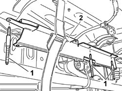

1042E66 CNG canister shield RIGHT mounting BRACKET - R.R.
- Path
- Procedures > 10 ENGINE > 1042 (METHANE) CNG CANISTER AND PIPES > 1042E gas cannister brackets and protectors > 1042E66 CNG canister shield RIGHT mounting BRACKET - R.R.
- Kind
- repair procedure (removal / refitting; the operation number is the code)
- Applies to
- all engines; all production periods; only with equipment: BIPOWER
- Interactive page
- https://sloeber94.github.io/elrnDB-fDbl/en/#/2584539
Applies to: all engines; all production periods; only with equipment: Cargo trim level and BIPOWER
 Removing
Removing
 Refitting
RefittingPlace the car on a lift.
1042E60 CNG CANISTER ASSEMBLY SHIELD/PROTECTION / - R.R.
1042A72 Centre CANISTER for CNG CANISTER ASSEMBLY - R.R.
1042A74 PIPE between FUEL TANK and fuel filler pipe - R.R.
1. Undo the pins securing the cylinder support bands.
2. Remove the right mounting bracket for the CNG cylinders unit guard.

Applies to: all engines; all production periods; only with equipment: Cargo trim level and BIPOWER
Refitting
RemovingFit the right mounting bracket for the CNG cylinders unit guard.
Secure the bracket by means of the pins securing the cylinder support bands.
 | Fastening | Component | Ø | Value (daNm) |
|---|---|---|---|---|
- | Stud | CANISTER SHIELD RIGHT MOUNTING BRACKET | M10 x 1.25 | (to bodyshell) 4.5 |
1042A74 PIPE between FUEL TANK and fuel filler pipe - R.R.
1042A72 Centre CANISTER for CNG CANISTER ASSEMBLY - R.R.
1042E60 CNG CANISTER ASSEMBLY SHIELD/PROTECTION / - R.R.
Remove the car from the lift.